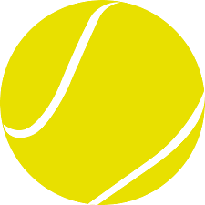

The Beginners Guide to Tennis
History
Famous Tennis Players from History
- John McEnroe
- He is most known for his tempertantrums on the tennis court.
- Serena Williams
- She has won 23 Grand Slam titles, more than any man or woman during the open era.
- Venus Williams
- She holds 4 Olympics medals, 3 or which are golds.
- Martina Navratilova
- She got to 12 singles finals and won 9 titles at Wimbledon.
- Micheal Chang
- He won a top-level professional title at the 1989 French Open at the age of 17.
- Arthur Ashe
- He holds 66 tour level singles titles.
- Jimmy Connors
- He held the Number 1 ranking for a total of 160 consecutive weeks.